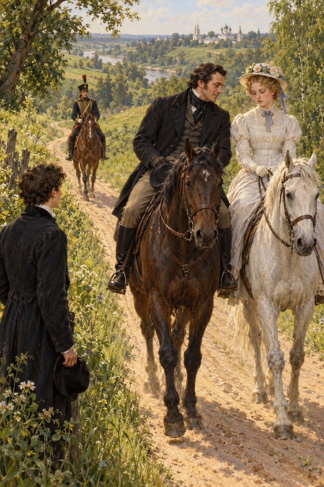

Ivan Turgenev · First Love
제14장
다음 날 아침
나는 일찍 일어났다.
나뭇가지를 깎아 지팡이를 만들고
관문 밖으로 나갔다.
슬픔을 걸어서 풀어 볼 생각이었다.
날은 맑고
그다지 덥지 않았다.
상쾌한 바람이
들판을 뛰놀았다.
딱 기분 좋을 만큼
잎을 흔들고 소리를 냈지만
무엇 하나 어지럽히지 않았다.
나는 언덕과 숲을
오래 헤맸다.
행복하지는 않았다.
우울함에 잠기려고
집을 나온 것이었다.
하지만 젊음과 맑은 날씨,
신선한 공기,
힘차게 걷는 즐거움,
빽빽한 풀밭에 혼자 누워 있는
느긋함이
제 몫을 했다.
잊을 수 없는 그 말과
입맞춤의 기억이
다시 마음속에 밀려들었다.
지나이다도 내 결단과 용기를
인정하지 않을 수 없으리라고
생각하니 기분이 좋았다.
‘다른 사람들이 나보다
더 좋을 수도 있겠지.
하지만 그들은
하겠다고 말만 해.
나는 실제로 했잖아.
그녀를 위해서라면
더 큰 일도 할 수 있어.’
상상력이 날개를 폈다.
적의 손아귀에서
그녀를 구하는 모습이 보였다.
피투성이가 된 채
감옥에서 그녀를 빼내고
발치에서 죽는 모습까지.
우리 집 응접실에 걸린
말레크아델이 마틸다를
데려가는 그림이 떠올랐다.
그러다 얼룩덜룩한
커다란 딱따구리가 눈에 띄었다.
그 새는 가는 자작나무 줄기를
바삐 올라가다가
줄기 뒤에서 좌우로
조심스럽게 고개를 내밀었다.
큰 현악기 목 뒤에 숨은
연주자 같았다.
나는 노래를 부르기 시작했다.
《눈도 희지 않고》를 부르다가
당시 유행하던
《장난스러운 산들바람이 불 때
그대를 기다리네》로 넘어갔다.
호먀코프의 비극에 나오는
예르마크가 별들에게 하는 말도
큰 소리로 낭송했다.
감상적인 시를
지어 보려고도 했다.
마지막 구절은 생각났다.
‘오, 지나이다!
지나이다!’
하지만 나머지가
나오지 않았다.
어느새 점심때가 다가왔다.
나는 골짜기로 내려갔다.
도시로 이어지는
좁은 모랫길이 굽이쳤다.
그 길을 따라 걷는데
뒤에서 말발굽 소리가
둔하게 들렸다.
돌아본 나는
저절로 멈춰 서서
모자를 벗었다.
아버지와 지나이다가
나란히 말을 타고 있었다.

아버지는 온몸을
그녀 쪽으로 기울이고
한 손을 말의 목에 댄 채
무엇인가 말했다.
웃고 있었다.
지나이다는
눈을 엄숙하게 내리깔고
입술을 꼭 다문 채
말없이 들었다.
처음에는 두 사람만 보였다.
조금 뒤 골짜기 굽이에서
벨로브조로프가 나타났다.
털 장식이 달린 경기병 군복을
입고 있었다.
거품을 문 검은 말은
머리를 흔들고
콧김을 뿜으며
날뛰었다.
장교는 고삐를 당기면서도
박차를 댔다.
나는 길옆으로 비켰다.
아버지가 고삐를 잡아당기고
지나이다에게서 몸을 뗐다.
지나이다는 천천히
아버지에게 눈을 들었다.
그리고 두 사람이
말머리를 달렸다.
벨로브조로프가
군도를 달그락거리며
뒤쫓아 갔다.
‘장교는 가재처럼 빨갛네.
그런데 지나이다는 왜
그렇게 창백하지?
아침 내내 말을 탔는데도.’
나는 걸음을 재촉해
점심 직전에 집에 도착했다.
아버지는 벌써
옷을 갈아입고 씻은 뒤
말끔한 모습으로
어머니 의자 옆에 앉아 있었다.
고르고 울림 좋은 목소리로
프랑스 신문 《주르날 데 데바》의
칼럼을
읽어 주고 있었다.
어머니는 건성으로 들었다.
나를 보자
하루 종일 어디에 있었느냐고
물었다.
어디서 누구와 다니는지도
모르는 건 싫다고 덧붙였다.
‘저 혼자 걸었어요.’
그렇게 말하려다가
아버지를 보았다.
왜인지 입을 다물었다.